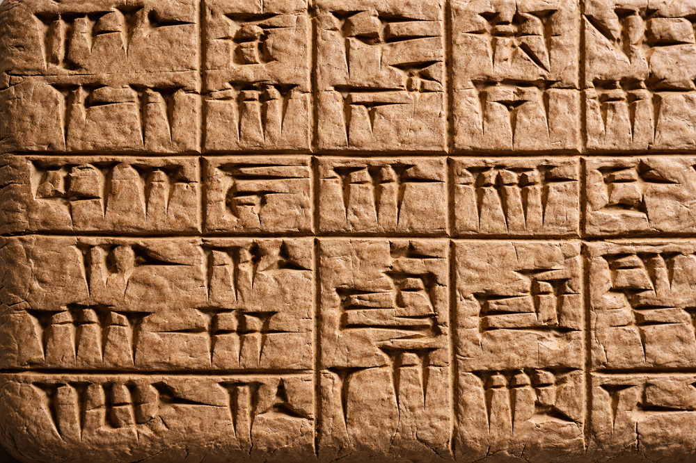

Home > Publications > Archive. History of the Book
History of the Book
Archive of publications
This section brings together studies on the history of the book, the history of writing, manuscript culture, libraries, archives, and documentary traditions across a wide range of geographies and periods, from ancient Mesopotamia, Egypt, and the classical Mediterranean to Tibet, China, the Islamic world, Indigenous North America, Mesoamerica, the Pacific, and early modern Europe. The texts explore writing systems, book forms, reading practices, material supports, pictographic and mnemonic records, calligraphy, rare and unusual books, lost texts, visual manuscripts, oral memory, and the social life of documents, tracing how knowledge has been inscribed, preserved, transmitted, transformed, and sometimes destroyed.
Articles
2023
Civallero, Edgardo (2023). Imágenes enrolladas. Piedra de Agua, 11 (30), 110-114. [Link]
(+) Abstract
One of the earliest material expressions of writing and administrative control emerged in ancient Mesopotamia, the region between the Tigris and Euphrates rivers traditionally associated with the civilization of Sumer (Kengir). In this context, small engraved objects known as cylinder seals played a crucial role in the development of early documentary practices. Archaeological evidence indicates that the earliest precursors of these devices appeared as early as the sixth millennium BCE in Neolithic sites across Anatolia, the Levant, and northern Mesopotamia. Initially made of clay and used to secure storage facilities, containers, and granaries, these seals functioned as markers of ownership and control over goods. Over time they evolved into more sophisticated instruments, especially during the Late Uruk period (around 3500 BCE), when cylindrical forms carved in stone began to include both images and some of the earliest examples of cuneiform writing.
Cylinder seals were typically small objects, often only a few centimeters in length, engraved with scenes combining symbolic imagery and, occasionally, textual elements. When rolled across a soft clay surface — such as a tablet or the seal of a container — they produced a continuous, repeating impression. This rolling technique generated what can be described as "unfolding images," sequences of figures and signs that extended across the clay in an uninterrupted band. The iconography represented on these seals evolved significantly over time, reflecting religious motifs, mythological scenes, social hierarchies, and professional identities. Because the engraved surface allowed for the repetition of complex scenes, the device functioned simultaneously as a signature, a visual emblem, and a communicative artifact within the administrative systems of early urban societies.
The production of cylinder seals required specialized craftsmanship. Artisans shaped and drilled stones such as chlorite, steatite, serpentine, marble, or limestone, and later harder materials including hematite and quartz, often imported from distant regions such as the highlands surrounding Mesopotamia or the Hindu Kush. Techniques involved abrasive tools, bow drills, and copper instruments fitted with abrasive tips, reflecting the technological sophistication of lapidary workshops in cities such as Ur. By the third millennium BCE, these objects were integrated into complex bureaucratic systems: scribes recording transactions on clay tablets would authenticate documents with the seal impressions of individuals or institutions. Although circular stamp seals eventually reappeared in the first millennium BCE alongside new writing media such as parchment and papyrus, cylinder seals remain one of the richest visual archives of ancient Mesopotamian art and one of the earliest material intersections of writing, imagery, and documentary authority in human history.
Civallero, Edgardo (2023). Para no ser un fósil museístico. Gazeta del Saltillo, 10 (3), 17-17. [Link]
(+) Abstract
The social role of libraries has undergone continuous transformation across centuries, adapting to changes in cultural practices, documentary formats, languages, and systems of knowledge. From early repositories of manuscripts and records, libraries gradually evolved into intellectual meeting places, guardians of cultural heritage, and institutions capable of supporting education, research, and collective memory. Within this historical trajectory, libraries have also been entangled with structures of power while simultaneously contributing to processes such as literacy, freedom of expression, and the democratization of access to information.
In contemporary societies marked by technological change and persistent social inequalities, the responsibilities of libraries extend beyond the preservation and organization of documents. Information professionals hold the capacity to facilitate social transformation by enabling communities — particularly those historically marginalized — to access knowledge and develop the intellectual tools required for participation in civic life. The concept of the digital divide illustrates this challenge: while information technologies provide new channels for communication and learning, disparities in education, training, and access to resources continue to reproduce unequal opportunities. Libraries can intervene in this landscape by designing services and programs that address these intellectual and educational gaps, whether through digital initiatives based on Information and Communication Technologies (ICT) or through more traditional forms of community engagement.
To fulfill this role, libraries must move beyond static institutional models and adopt flexible, socially responsive practices oriented toward the needs of their users. This transformation involves removing barriers that limit access to knowledge and developing outreach strategies that connect library services with schools, community organizations, cultural associations, and underserved neighborhoods. It also requires information professionals to cultivate interdisciplinary perspectives, integrating tools and insights from fields such as history, linguistics, education, and law. In this sense, librarianship emerges not as a closed or static discipline but as an evolving field whose effectiveness depends on a sustained commitment to social responsibility, active engagement with communities, and the continuous redefinition of its mission within changing cultural and informational environments.
Civallero, Edgardo (2023). Un código sin Rosetta. Piedra de Agua, 12 (31), 78-81. [Link]
(+) Abstract
One of the most enigmatic writing traditions known to scholarship is the system called rongorongo, associated with the Indigenous culture of Rapa Nui, commonly known as Easter Island. Located in the southeastern Pacific Ocean approximately 3,700 kilometers from the nearest point of the South American coast, Rapa Nui was settled between roughly 400 and 1200 CE by Polynesian navigators, probably from the Marquesas Islands. Over the centuries, these communities developed a distinct cultural complex that included monumental ceremonial centers marked by the famous moai statues, specialized agricultural practices, and a stratified social structure. Within this context emerged a unique graphic system engraved on wooden tablets and objects, a form of inscription that constitutes the only known indigenous writing tradition from the Pacific cultural area.
The script, known as rongorongo — a term meaning "to recite" in the Rapanui language — was carved into wood using tools such as shark teeth or obsidian blades. The inscriptions appear on objects such as wooden tablets, ceremonial staffs, and decorative pectorals known as reimiros. Scholars generally interpret the system as a mnemonic device used to preserve ritual knowledge, genealogies, chants, and other culturally significant texts. Specialists trained to interpret these inscriptions were known as tangata rongorongo, individuals responsible for reciting and transmitting encoded knowledge within the community. The glyphs include anthropomorphic figures, animals, celestial symbols, and geometric forms, arranged in sequences that appear to follow an unusual reading pattern known as reverse boustrophedon, in which lines alternate direction while the tablet itself is rotated during reading.
Despite considerable scholarly effort, the rongorongo system remains undeciphered. The disappearance of the last knowledgeable readers during the nineteenth century — caused by epidemics, colonial disruption, and the enslavement of many Rapanui people during Peruvian guano expeditions in the 1860s — eliminated the cultural knowledge necessary to interpret the glyphs. As described in the historical record, European observers first encountered the script during the Spanish annexation ceremony of 1770, when local leaders signed the document using rongorongo symbols. Only a small corpus of inscriptions survives today: roughly twenty-five authenticated objects, including fourteen complete tablets and several fragments preserved in museums around the world. Without a bilingual inscription comparable to the Rosetta Stone or the Behistun inscription — artifacts that enabled the decipherment of Egyptian hieroglyphs and Mesopotamian cuneiform — the rongorongo texts remain resistant to interpretation, leaving behind a silent archive whose meanings are largely inaccessible yet profoundly significant for the study of writing systems, Indigenous knowledge traditions, and the cultural history of the Pacific.
2022
Civallero, Edgardo (2022). Los gigantes del sur del mundo. Piedra de Agua, 10 (29), 103-105. [Link]
(+) Abstract
Early European exploration of southern South America generated a persistent body of narratives describing the supposed existence of "giants" inhabiting the coasts and islands of Patagonia and Tierra del Fuego. These accounts circulated widely in travel literature from the sixteenth and seventeenth centuries and became embedded in European geographic imagination, shaping cartography, ethnographic speculation, and the literary portrayal of the far southern regions of the world. The origins of the legend are commonly traced to the chronicles of Antonio Pigafetta, the Venetian navigator who accompanied Ferdinand Magellan's expedition during the first circumnavigation of the globe (1519–1522). In his Relazione del primo viaggio intorno al mondo, Pigafetta described an encounter in 1520 at Puerto San Julián with an Indigenous man of extraordinary stature, whom the expedition's commander referred to as a "Patagon." The term, later applied to the region itself, contributed to the enduring association between Patagonia and the idea of gigantic inhabitants.
Subsequent explorers and chroniclers repeated and elaborated these reports, reinforcing the myth through successive travel narratives. Gonzalo Fernández de Oviedo mentioned large footprints attributed to "giants or Patagons" in his Historia general y natural de las Indias, while the English navigator Francis Drake's chaplain Francis Fletcher and later travelers such as Sir Thomas Cavendish and Anthony Knivet described enormous footprints and bodies of unusual size encountered along the Patagonian coast. Spanish historian Bartolomé Leonardo de Argensola, in Conquista de las islas Malucas (1609), recounted claims that Magellan had captured individuals described as giants, and later Dutch navigators including Sebald de Weert, Olivier van Noort, Joris van Spilbergen, and Willem Schouten reported sightings of exceptionally tall inhabitants in the Strait of Magellan and neighboring territories. These accounts circulated in widely read compilations of voyages such as the Great Voyages published by Theodor de Bry between 1590 and 1630, further popularizing the image of Patagonia as a land of enormous people.
Modern ethnographic and historical research has demonstrated that these descriptions were exaggerations or misunderstandings rather than evidence of extraordinary human stature. Indigenous societies of southern Patagonia and Tierra del Fuego — including the Aonikenk or Southern Tehuelche, the Selk'nam (Ona), the Qawásqar (Alacalufe), and the Yámana (Yaghan) — did not differ significantly in height from other human populations. The persistence of the legend nevertheless illustrates how early travel literature transformed isolated encounters and interpretive errors into enduring geographical myths. Through repeated citation in exploration narratives, maps, and historical chronicles, the idea of the "giants of the south of the world" became a symbolic element of European representations of Patagonia and the southernmost regions of the American continent.
Civallero, Edgardo (2022). Los manuscritos de la Tierra del Dragón de Jade. Piedra de Agua, 10 (27), 97-100. [Link]
(+) Abstract
The Naxi people constitute one of the officially recognized ethnic minorities of the People's Republic of China and inhabit the mountainous regions along the southeastern slopes of the Himalayas, particularly around the city of Lijiang in northwestern Yunnan province and neighboring areas of Sichuan and the Tibetan borderlands. Their language belongs to the Tibeto-Burman branch of the Sino-Tibetan linguistic family and has been historically influenced by contact with Chinese, Tibetan, and Bai languages. Historically, Naxi communities participated in the caravan trade routes connecting China, Tibet, and India, especially along the so-called Tea and Horse Road (Chá Mǎ Dào), while maintaining a distinctive cultural and religious system centered on animist traditions administered by ritual specialists known as dongba.
Central to Naxi religious practice is a unique pictographic writing tradition commonly known as the Dongba script. Developed and used primarily by the dongba priests, this system consists largely of pictograms that function as mnemonic devices rather than as a fully phonetic representation of language. The symbols serve as prompts enabling priests to recite or reconstruct ritual texts, myths, prayers, and ceremonial instructions that were largely preserved through oral transmission. When pictographic signs proved insufficiently precise, they could be supplemented by annotations written in geba, a syllabic script of roughly two thousand symbols that likely derived from the Yi writing system and shows influence from Chinese characters. Manuscripts containing these signs were typically written with bamboo pens and soot-based ink on coarse handmade paper and bound between decorated covers, forming ritual books used during ceremonies such as funerary rites, exorcisms, and divination rituals.
Thousands of Dongba manuscripts have been preserved in collections across the world and constitute an invaluable documentary record of Naxi culture. These texts contain mythological narratives, cosmological accounts, ritual instructions, agricultural knowledge, historical traditions, and descriptions of everyday life, making them one of the most extensive pictographic manuscript traditions still surviving. Significant collections are held in institutions such as the Library of Congress in Washington, the Yenching Library of Harvard University, the British Library in London, the Staatsbibliothek in Berlin, and the John Rylands Library in Manchester, while the Dongba Culture Research Institute in Lijiang preserves approximately one thousand manuscripts. Despite their historical importance, the tradition faces serious threats: the Dongba script was discouraged after the establishment of the People's Republic of China in 1949, many manuscripts were destroyed during the Cultural Revolution, and today only a small number of elderly dongba priests and specialized linguists retain the knowledge required to read and write the pictograms, making the preservation of this writing system and its manuscripts an urgent concern for scholars and cultural institutions.
Civallero, Edgardo (2022). Nüshü. Palabras entre mujeres. Piedra de Agua, 10 (28), 121-123. [Link]
(+) Abstract
In the county of Jiangyong, in the southern Chinese province of Hunan, a distinctive writing tradition developed among women that differed fundamentally from the dominant logographic Chinese script. Known as nüshu — literally "women's writing" — this system was used to represent a local spoken variety called tuhua or Xiangnan tuhua, a language spoken in communities along the Xiao River. Unlike standard Chinese writing, in which each character represents a morpheme or word, nüshu functioned as a syllabic system: each sign corresponded to a syllable of the spoken language. Scholars estimate that the core repertoire included approximately six to seven hundred basic symbols, although the total number of recorded characters — counting variants and stylistic forms — reaches roughly thirteen thousand. The script evolved from simplified adaptations of the kaishu ("regular script") style of Chinese characters, whose square forms were transformed into elongated, rhomboid shapes composed of fine, slanted strokes.
The distinctive social function of nüshu lay in its exclusive association with women. It was written on paper, embroidered into textiles, or painted on objects such as fans and handkerchiefs, serving as a medium of communication and solidarity within female communities in rural Jiangyong. Much of the preserved corpus consists of sanzhaoshu ("third-day books"), small booklets prepared by mothers or close female companions and presented to a bride three days after her marriage. These manuscripts contained poems, songs, and personal reflections expressing affection, advice, and sorrow at the separation imposed by marriage. Nüshu texts were also used for letters, autobiographical narratives, birthday greetings, and lyrical compositions often written in seven-syllable poetic lines. Through these writings women recorded aspects of their daily lives, beliefs, family relations, and emotional experiences, creating a rare documentary record of voices that were otherwise largely absent from the literary history of traditional Chinese society.
The survival of the script was closely linked to social practices such as the laotong relationship, a lifelong bond between two women who considered each other sworn sisters and communicated through nüshu messages exchanged in letters or inscribed objects. Despite its cultural importance, the tradition gradually declined during the twentieth century. Its use was discouraged during periods of political upheaval, including the Japanese occupation and later the Chinese Cultural Revolution, and the expansion of education in standard Chinese further reduced its transmission. Yang Huanyi, widely recognized as the last native practitioner able to read and write the system fluently, died in 2004 in Jiangyong at the age of ninety-eight. Although contemporary researchers and cultural initiatives have attempted to document and revive the script, much of the social world that gave nüshu meaning — its networks of female companionship, mutual support, and intimate exchange — has largely disappeared, leaving the writing system as both a linguistic curiosity and a powerful testimony to women's cultural expression in rural China.
2006
Civallero, Edgardo (2006). Los primeros pasos de la biblioteca. Diario Los Andes (Mendoza, Argentina), (1), 1-2. [Link]
(+) Abstract
This text presents a historical reflection on the origins and early functions of libraries, situating their emergence within the development of writing systems and the first complex civilizations. Beginning with the archival and documentary centers of ancient Mesopotamia around the third millennium BCE, it examines how the invention of writing enabled the codification, storage, and transmission of information, transforming knowledge into a durable social resource. At the same time, the text emphasizes that written information has always been intertwined with structures of power: the capacity to record, preserve, and control information allowed ruling elites to administer territories, legitimize authority, and shape the historical memory transmitted to subsequent generations.
The narrative traces the evolution of documentary practices across multiple cultural contexts where writing systems emerged independently, including regions such as China, the Indian subcontinent, and Mesoamerica. Early libraries and archives are described as institutions closely connected to temples, palaces, and governing authorities, where scribes and early information managers developed techniques for organizing clay tablets and other documentary supports. Through these practices, libraries became repositories of administrative records, literary texts, religious writings, and linguistic knowledge, consolidating their role as institutions responsible for safeguarding collective memory and facilitating the continuity of cultural traditions across generations.
The text further explores the vulnerability of recorded knowledge in contexts of war, conquest, and political transformation, highlighting the destruction of archives and libraries as a deliberate strategy for erasing cultural memory. Examples ranging from ancient centers such as Nineveh to modern conflicts illustrate how the loss of documentary heritage disrupts the historical continuity of societies. Within this long historical perspective, libraries emerge as institutions entrusted with preserving knowledge, protecting cultural memory, and transmitting the intellectual heritage of civilizations, while also reflecting the persistent tensions between access to information, political authority, and social inequality.
Others
2018
Civallero, Edgardo (2018). Diez textos desaparecidos. Pre-print. [Link]
(+) Abstract
Throughout history, many influential texts have disappeared through processes of destruction, neglect, linguistic transformation, or political upheaval. The historical record preserves references to numerous works that once circulated widely but are now known only through fragments, quotations, translations, or indirect testimony. These lost writings span diverse cultural traditions and genres, including religious oracles, philosophical treatises, poetic collections, encyclopedic compilations, and historical chronicles. Their disappearance illustrates the fragility of textual transmission and the dependence of intellectual history on the survival of manuscripts, copying practices, and institutional preservation.
Some cases involve texts known primarily through secondary references or partial survivals. The Sibylline Books (Libri Sibyllini), a collection of prophetic Greek hexameter oracles attributed to the Hellespontine Sibyl and preserved in Rome under the supervision of the quindecemviri sacris faciundis, were destroyed when the Temple of Jupiter on the Capitoline Hill burned in 83 BCE, later reconstructed from related oracular materials gathered from sites such as Erythrae, Samos, Sicily, and North Africa. Similarly, the lyric poetry of Sappho of Lesbos — once compiled in at least eight books by Alexandrian scholars and comprising perhaps ten thousand verses — survives today only in fragments preserved in quotations by later authors and in papyri recovered at Oxyrhynchus in Egypt. Greek tragedy offers another example: although Aeschylus wrote roughly ninety plays, only seven survive intact, while works such as the trilogy commonly referred to as the Achilleis — including Myrmidons, Nereids, and Phrygians—remain known through scattered lines preserved in later manuscripts and papyrus fragments.
Other traditions suffered losses on a much larger scale through conquest, censorship, or historical upheaval. Pre-Columbian Maya codices, written on huun bark paper and containing calendrical, ritual, historical, and genealogical knowledge, were largely destroyed during the Spanish conquest of Mesoamerica, notably in the 1562 auto de fe ordered by the Franciscan bishop Diego de Landa in Maní (Yucatán); only a handful of manuscripts — the Dresden, Madrid, and Paris codices, along with the disputed Grolier Codex — are known today. Religious and scholarly literature elsewhere experienced similar fragmentation. The sacred texts of Zoroastrianism, collectively known as the Avesta, were repeatedly lost and reconstructed across centuries, with large portions destroyed after the burning of Persepolis during Alexander the Great's campaign and again during later invasions. Chinese intellectual history preserves accounts of a lost sixth Confucian classic, the Classic of Music (Yuèjīng), believed to have disappeared during the Qin dynasty's suppression of books and scholars in 213–210 BCE. Comparable processes of loss affected monumental compilations such as the Yongle Encyclopedia of the Ming dynasty — once consisting of more than 11,000 manuscript volumes and 370 million characters — and the works of scholars such as the Arab polymath Ibn al-Haytham, of whose more than two hundred treatises only a fraction survive. Together these cases reveal how the disappearance of texts has profoundly shaped the contours of cultural memory and the historical understanding of ancient and medieval intellectual traditions.
Civallero, Edgardo (2018). Diez textos, diez escrituras. Pre-print. [Link]
(+) Abstract
Human writing systems have emerged in close relation to specific cultural, linguistic, and historical contexts, producing a remarkable diversity of graphic traditions across the world. Alphabets, syllabaries, abugidas, and logographic systems developed in response to the phonological structures of particular languages and the intellectual environments in which they were used. From liturgical manuscripts and legal codices to epic narratives and genealogical records, these scripts served as instruments through which societies encoded memory, authority, religion, and political organization. Examining a range of historical writing systems illustrates both the variety of graphic solutions devised to represent language and the documentary traditions that accompanied them.
Among the earliest Slavic scripts was the Glagolitic alphabet, traditionally attributed to the Byzantine missionary Cyril of Thessalonica in the ninth century and used for translating Christian liturgical texts into Old Church Slavonic in Great Moravia. One of its most important surviving witnesses is the Codex Marianus, an eleventh-century Gospel manuscript discovered by the Slavist Viktor Ivanovič Grigorovič on Mount Athos and later preserved in the Russian State Library. In medieval Scandinavia, runic writing developed from earlier Germanic alphabets such as the futhark and evolved into a later medieval form recorded in manuscripts such as the Codex Runicus (ca. 1300), which preserves the Skånske lov or Law of Scania together with ecclesiastical regulations and historical notes. In the Horn of Africa, the Ethiopic or Geʽez script — an abugida derived from South Arabian writing — served as the vehicle for a large Christian literary tradition; one of its most celebrated texts is the Kebra Nagast ("Glory of the Kings"), a fourteenth-century work that narrates the legendary genealogy of the Solomonic dynasty of Ethiopia and the transfer of the Ark of the Covenant to Aksum.
Other writing systems reflect the intercultural networks through which texts circulated across Asia and the Pacific. The Sogdian script, derived from Syriac and used between the first and twelfth centuries across Central Asia, appears in documents such as the "Ancient Letters" discovered by Aurel Stein near Dunhuang, which include both commercial correspondence and personal messages from the early fourth century. In Southeast Asia, scripts derived from the ancient Brahmi tradition generated numerous regional alphasyllabaries, including the Balinese script used in palm-leaf lontar manuscripts such as the eleventh-century Arjunawiwāha, the Lao script used in Buddhist narratives like the story of Nang Olaphim, and the Baybayin writing of the Philippines, which appears in early printed works such as the Doctrina Christiana of 1593 produced by Spanish missionaries in Manila. Comparable traditions include the Lontara script of the Bugis people of Sulawesi, employed in manuscripts of the monumental epic Sureq Galigo, and the pictographic-logographic system of the Mixtec civilization of Mesoamerica, preserved in codices such as the Codex Vindobonensis Mexicanus I (Códice Yuta Tnoho), a folded deer-hide manuscript narrating genealogies and mythological histories of Mixtec rulers. Together these examples demonstrate the immense diversity of writing systems and documentary forms developed across human societies, each embedded in specific linguistic, religious, and historical traditions.
2017
Civallero, Edgardo (2017). Pictografías indígenas. Pre-print. [Link]
(+) Abstract
Pictographic communication has played a central role in the transmission of knowledge among many Indigenous societies of North America. Pictographs — simplified drawings created with communicative intent — function as visual signs capable of representing ideas, events, or mnemonic cues rather than phonetic language. These graphic systems appear in highly schematic forms designed to emphasize essential elements of a message while omitting unnecessary detail. Across numerous Indigenous traditions, pictographs served as aids to memory, narrative devices, and documentary records that preserved stories, historical events, and cultural knowledge for transmission across generations.
Indigenous pictography was expressed through a remarkable diversity of materials and techniques. In the southwestern regions of what are now the United States, pictographs were carved into bone surfaces such as buffalo scapulae; an example reproduced by the ethnologist Henry R. Schoolcraft depicts a Comanche scene incised on a buffalo shoulder blade illustrating conflict between Indigenous hunters and Spanish colonists. Other traditions employed organic or crafted materials as communicative supports. In eastern Canada and the northeastern United States, decorative designs woven with dyed porcupine quills were applied to objects made from birch bark, while shell beads arranged in patterns formed wampum belts used by the Haudenosaunee (Iroquois Confederacy) to record treaties, alliances, and political agreements. Additional media included ritual sand paintings created by Diné (Navajo) ceremonial specialists, genealogical records engraved on copper plates among the Ojibwe, and carved symbols inscribed on trees in Cayuga territory, which functioned as a kind of historical archive narrating battles, victories, and social events.
Other pictographic systems were integrated into everyday objects or portable documentary forms. Among the Haida and Tlingit peoples of the Pacific Northwest, symbolic motifs representing clan identities and mythological beings were painted or woven into baskets, hats, and other utilitarian objects made from spruce roots and cedar bark. The Tongva of southern California used mnemonic devices consisting of incised tally sticks and cords with knots to track trade transactions, while the Ojibwe produced birch bark scrolls known as wiigwaasabak, some of which preserved ritual knowledge associated with the Midewiwin or Grand Medicine Society. In the Great Plains, peoples such as the Lakota, Dakota, and Nakota recorded historical memory through pictorial calendars known as winter counts (waníyetu wówapi), painted on buffalo hides and representing significant events of each year through a sequence of images. These diverse practices demonstrate how pictography functioned as a complex documentary system embedded in material culture, ritual practice, and collective memory across Indigenous North America.
2016
Civallero, Edgardo (2016). El Cherokee Phoenix. Pre-print. [Link]
(+) Abstract
The creation of the Cherokee syllabary in the early nineteenth century represents one of the most remarkable episodes in the history of writing systems and Indigenous literacy in the Americas. The system was devised by Sequoya (c. 1770–1843), also known as George Gist or Guess and as Siqwavi in the Cherokee language, a silversmith of the Cherokee or Ani-Yvwiya people who lived in the region that today corresponds to the states of Tennessee, Alabama, Arkansas, and Oklahoma in the United States. Fascinated by the ability of written messages — what he described as "talking leaves" — to preserve and transmit information across distance, Sequoya developed between 1809 and 1821 a syllabic writing system for the Cherokee language, Tsalagi tigaloquastodi, composed of eighty-six characters representing syllables. Officially adopted by the Cherokee Nation in 1825, the syllabary enabled rapid literacy among Cherokee speakers, at times surpassing the literacy rates of surrounding Euro-American settlers.
The success of the Cherokee syllabary had wider consequences in the history of Indigenous writing systems in North America. Its diffusion inspired other syllabic scripts created or adapted during the nineteenth century, including the Cree syllabary developed by the Methodist missionary James Evans in the 1840s in Rupert's Land and the Hudson Bay region, drawing partly on knowledge of Devanagari and shorthand systems such as those of Taylor and Pitman. Later adaptations and related systems were introduced for languages such as Ojibwe (Chippewa), Inuktitut, Blackfoot (Siksika), Slavey (Dene k'e), Chipewyan (Denésoliné), and Carrier (Dakelh), through the work of missionaries including John Horden, Edwin Arthur Watkins, Edmund Peck, John William Tims, Émile Petitot, and Adrien-Gabriel Morice. Some of these syllabaries remain in use today, particularly the Cherokee syllabary and the Cree and Inuktitut syllabic systems used across regions of Canada including Nunavut and Nunavik.
The syllabary also enabled the development of Indigenous print culture. In 1828 the Cherokee Nation established the Cherokee Phoenix (Tsalagi tsulehisanvhi), printed in New Echota, Georgia, the first newspaper published in an Indigenous language in North America and one of the earliest such publications in the Americas. The paper was produced using movable type created for the Cherokee syllabary by the missionary Samuel Worcester, and its first editor was Elias Boudinot (Galagina Oowatie). The newspaper later became Cherokee Phoenix and Indians' Advocate and continued publication in Tahlequah, Oklahoma, before political conflicts and federal policies against Cherokee self-government forced its closure in 1834; it later reappeared as the Cherokee Advocate between 1844 and 1906. The surviving nineteenth-century issues, preserved in institutions such as the University of Georgia and the Digital Library of Georgia, constitute a key documentary record of Indigenous journalism, language preservation, and the history of Native American print culture.
Civallero, Edgardo (2016). El libro etrusco que envolvió una momia. Pre-print. [Link]
(+) Abstract
The Etruscan language remains one of the most enigmatic linguistic systems of the ancient Mediterranean. Spoken by the Rasna or Rasenna — known to the Greeks as Tyrrhenoi and to the Romans as Tusci or Etrusci — it developed within the civilization that flourished in Etruria between roughly 800 and 100 BCE, in the region corresponding to modern Tuscany and parts of Umbria, Lazio, Campania, Lombardy, Veneto, and Emilia-Romagna in Italy. Unlike Latin and most other languages of the Italian peninsula, Etruscan was not Indo-European, and its origins remain uncertain. Although the Etruscans adopted an alphabet derived from the Greek script used by settlers from Euboea in colonies such as Cumae and Ischia during the seventh century BCE, the language itself has no known descendants. Archaeological and epigraphic evidence — including approximately 13,000 inscriptions compiled in the Corpus Inscriptionum Etruscarum of Uppsala University — demonstrates that writing played a significant role in Etruscan society, appearing on everyday objects, funerary monuments, painted ceramics, engraved mirrors, and ritual artifacts, even though almost none of the literary works mentioned by Roman authors have survived.
Among the few extended texts preserved in the Etruscan language, the most remarkable is the Liber Linteus Zagrabiensis ("Linen Book of Zagreb"), the longest known Etruscan manuscript and the only surviving ancient book written on linen. The document originally measured approximately 340 by 45 centimeters and contained twelve columns and about 230 lines of text written from right to left in black ink with red rubrication. Linguistic analysis indicates that the manuscript was produced between the late second century BCE and around 150 BCE, possibly in northern Etruria near Perugia, although dialectal features suggest that the scribe may have previously worked in southern centers such as Tarquinia. Scholars such as Karl Olzscha and L. Bouke van der Meer have interpreted the text as a ritual calendar describing ceremonies, sacrifices, and offerings dedicated to various Etruscan deities—including Tin, Nethuns, and Lusa — within the religious framework of Etruscan ritual practice.
The survival of this unique manuscript is the result of an extraordinary chain of historical accidents. During the Ptolemaic period in Egypt, the linen manuscript was cut into strips and reused as wrappings for the mummification of a woman named Nesi-hensu in Thebes. The mummy was later purchased in Alexandria in 1848 by the Croatian traveler Mihajlo Barić and eventually donated to the Archaeological Museum of Zagreb. Initially misidentified as Egyptian writing by the Egyptologist Heinrich K. Brugsch, the text was later recognized as Etruscan by Jacob Krall in 1891. Modern restoration and photographic analysis conducted by Francesco Roncalli and the Abegg Foundation in Riggisberg allowed the reconstruction of the original arrangement of the linen bands. Today the Liber Linteus Zagrabiensis represents a crucial source for the study of Etruscan language, religion, ritual calendars, and ancient Mediterranean textual traditions, illustrating how fragile documentary artifacts can survive through unexpected paths across cultures and centuries.
Civallero, Edgardo (2016). Il Tiberio: un zine en la Barcelona postmoderna. Pre-print. [Link]
(+) Abstract
At the end of the nineteenth century, handwritten magazines and small-circulation artistic publications constituted an important medium for intellectual exchange within European artistic circles. Among these ephemeral forms of cultural production was Il Tiberio, a manuscript magazine created in Barcelona between 1896 and 1898 by a group of young artists associated with the Acadèmia Borrell and the informal gathering place known as El Rovell de l'Ou, a tavern located on Carrer de l'Hospital in the historic center of the city. Produced before mechanical reproduction technologies were accessible to small groups, each issue existed as a single handwritten copy containing articles, artistic critiques, cultural commentary, and original drawings. The contributors included figures who would later become notable within Catalan art, such as the painters Marià Pidelaserra i Brias, Juli Borrell i Pla, Josep-Víctor Solà i Andreu, the caricaturist Gaietà Cornet i Palau, the sculptor Emili Fontbona i Ventosa, and the lithographer and illustrator Ramon Riera i Moliner, who served as the central organizer of the project.
The magazine functioned primarily as a means of communication with the painter Pere Ysern i Alié, a member of the group who had moved to Rome in 1896 to continue his artistic training. Through the handwritten pages of Il Tiberio, his colleagues documented artistic debates, cultural events, and personal reflections occurring within the Barcelona artistic milieu. The publication adopted the physical format of the satirical and anticlerical Catalan weekly L'Esquella de la Torratxa, measuring approximately 32.5 by 20.5 centimeters. Between 15 November 1896 and 1 May 1898 the group produced thirty-five regular issues and five special numbers, an unusually intense production rhythm for a manuscript zine created collectively by artists who were still students. The title of the magazine derived from the nickname given by Ramon Riera i Moliner to Ysern himself, reinforcing the intimate and personal nature of the project.
Beyond its role as a private correspondence artifact, Il Tiberio also reflects the aesthetic and political debates of the Catalan cultural environment at the turn of the twentieth century. The circle associated with El Rovell de l'Ou positioned itself in opposition to dominant currents of Catalan modernisme, advocating artistic renewal while rejecting what they considered the movement's excessive symbolism and decorative fantasy, including motifs such as fairies, dwarfs, and mythical figures popular in modernist literature and visual arts. Influenced by the teachings of the painter Pere Borrell del Caso and engaged in discussions surrounding Catalanism—then divided between the progressive ideas of Valentí Almirall and the conservative nationalism associated with Enric Prat de la Riba — the group articulated its aesthetic positions through essays, satire, and visual commentary. After Ysern's return from Rome, the surviving collection of the magazine passed through several private libraries before entering the Biblioteca de Catalunya, where it has been preserved and later digitized, becoming a valuable document of late nineteenth-century Catalan artistic networks, manuscript periodicals, and early forms of what would later be recognized as zine culture.
Civallero, Edgardo (2016). Juana Capdevielle, bibliotecaria represaliada. Pre-print. [Link]
(+) Abstract
Juana María Clara Capdevielle San Martín (Madrid, 12 August 1905 - Rábade, Lugo, 18 August 1936) was a Spanish librarian and intellectual associated with the reformist cultural environment of the Second Spanish Republic and later a victim of the repression unleashed after the military coup of July 1936. Educated at the Universidad Central de Madrid (today the Universidad Complutense), where she studied Filosofía y Letras under professors such as José Ortega y Gasset and alongside fellow student María Zambrano, Capdevielle entered the Cuerpo Facultativo de Archiveros, Bibliotecarios y Arqueólogos in 1930 through competitive examination. After a training period at the Biblioteca Nacional de España, she joined the library of the Facultad de Filosofía y Letras, initially located at the Instituto de San Isidro and later transferred to the new Ciudad Universitaria. In 1933 she became head of the faculty library, becoming the first woman to hold that position in the institution, and simultaneously worked as technical head of the library of the Ateneo Científico, Literario y Artístico de Madrid, where she implemented the Universal Decimal Classification (Clasificación Decimal Universal, CDU) as part of the modernization of bibliographic organization in Spain.
Capdevielle played an active role in the professionalization and social engagement of librarianship during the 1930s. She was a founding member and treasurer of the Asociación de Bibliotecarios y Bibliógrafos de España, created on 28 May 1934 with the objective of expanding library services, modernizing collections, and promoting the active role of librarians in Spanish cultural life. Among the initiatives she organized was a circulating reading service for hospital patients at the Hospital Clínico and the Hospital de San José y Santa Adela de la Cruz Roja, selecting and distributing reading materials intended to provide emotional relief and intellectual stimulation to the sick. She also participated in the Primeras Jornadas Eugénicas Españolas de Genética, Eugenesia y Pedagogía Sexual held in Madrid in 1934, where she presented the lecture "El problema del amor en el ambiente universitario," challenging the positions of figures such as Roberto Nóvoa Santos and Ramón J. Sender and advocating a conception of personal relationships grounded in equality and freedom. In 1935 she collaborated in organizing the II Congreso Internacional de Bibliotecas y Bibliografía — later associated with the International Federation of Library Associations (IFLA) — held in Madrid and Barcelona, where she presented a paper on the objectives and practices of hospital libraries.
Her professional and intellectual trajectory was abruptly interrupted by the outbreak of the Spanish Civil War. In March 1936 she had married the lawyer and academic Francisco Pérez Carballo, a member of Izquierda Republicana who was appointed civil governor of La Coruña in April of that year. Following the military uprising of 18 July 1936, Pérez Carballo was arrested and executed on 24 July by insurgent forces. Capdevielle, who was pregnant at the time, was also detained, imprisoned, and later released under restrictions that forced her to leave the city. On the night of 17 August 1936 she was arrested again by the Guardia Civil on orders of the rebel authorities and handed over to a Falangist squad; her body was found the following morning in a roadside ditch along the N-VI highway near Rábade in the province of Lugo. The killing of Juana Capdevielle has since been documented by historians such as Paul Preston and forms part of the broader repression of intellectuals, professionals, and politically engaged women carried out during the early months of the Francoist uprising and the consolidation of the dictatorship in Spain.
Civallero, Edgardo (2016). Las encuadernaciones de la Ruta de la Seda. Pre-print. [Link]
(+) Abstract
The oasis city of Dūnhuáng, located between the Taklamakan and Gobi deserts, emerged during the Western Hàn dynasty after the emperor Wŭ established frontier garrisons around 104 BCE to secure China's western borders against the Xīongnú. Over time the settlement developed into a major strategic and cultural crossroads along the Silk Road, where merchants, pilgrims, soldiers, and missionaries traveling between East Asia and the Mediterranean exchanged goods, ideas, and religious traditions. The region also became an important Buddhist center, particularly through the complex of temples known as the Mògāo Caves or Qiān Fó Dòng ("Caves of the Thousand Buddhas"), where monastic communities created an extensive corpus of religious art and manuscripts between the fourth and fourteenth centuries. In 1900 the Daoist caretaker Wáng Yuánlù discovered a sealed chamber within the caves — later called the "Library Cave" (cave 17) — containing approximately 50,000 manuscripts produced between 402 and 1002 in languages such as Chinese, Tibetan, Sanskrit, Sogdian, Khotanese, and Uighur. Many of these texts were later dispersed among institutions including collections in Beijing, London, Paris, and Berlin, and are now studied collaboratively through initiatives such as the International Dunhuang Project.
The manuscripts from Dūnhuáng provide an exceptional record of the historical evolution of book forms and binding techniques across Central and East Asia. Earlier writing supports used in China included materials such as bamboo strips and wooden tablets bound with cord, known as jiǎn cè, as well as silk manuscripts and early paper scrolls (juànzhóu zhuāng). Bamboo and wood had been the primary supports during periods such as the Warring States era and the Hàn dynasty, while silk functioned as a costly alternative until the growing adoption of paper. The development of paper, traditionally attributed to Cài Lún in 105 CE, gradually transformed the production of written documents. Paper scrolls became widespread in China and later spread to Korea (gweonjabon or durumari) and Japan (makimono or kansubon). However, scroll formats made it difficult to locate specific passages within long texts, prompting experimentation with new book structures and binding techniques.
Among the formats documented in manuscripts from the Silk Road are several key stages in the history of Asian bookbinding. The Indian palm-leaf manuscript format known as pothī (or tadpatra) was introduced into China through Buddhist transmission and adapted as fànjiā zhuāng, although the fragility of paper limited its widespread adoption. Subsequent innovations included the accordion-style jīngzhě zhuāng ("folded sūtra binding"), used especially for Buddhist texts; the transitional "whirlwind" or "dragon-scale" binding (xuànfēng zhuāng or lónglín zhuāng), developed during the Táng dynasty for reference works; and the "butterfly binding" (húdié zhuāng), which emerged alongside the expansion of woodblock printing during the Sòng dynasty. Later improvements produced the "wrapped-back" binding (bāobèi zhuāng) and eventually the sewn binding (xiàn zhuāng), which became the dominant format for Chinese books from the late Míng dynasty through the Qīng period. Together, the manuscripts discovered in Dūnhuáng preserve an unparalleled sequence of book technologies, illustrating how writing supports, binding methods, religious traditions, and intercultural exchange along the Silk Road shaped the historical development of the book in East and Central Asia.
Civallero, Edgardo (2016). Libros pintados. Pre-print. [Link]
(+) Abstract
Across many cultures and historical periods, books have functioned not only as carriers of written text but also as visual artifacts in which images structure, complement, or even replace verbal language. Painted books constitute a long and diverse tradition in which illustration becomes the primary narrative medium, transforming manuscripts into hybrid objects that combine painting, calligraphy, and storytelling. These works appear in a wide range of cultural contexts, from illustrated albums and artistic travel narratives to costume books and documentary collections of images. In such volumes, the page operates simultaneously as a pictorial surface and a documentary record, allowing visual representation to organize information about landscapes, people, practices, and events in ways that written description alone cannot achieve.
Within this broader tradition, painted books often emerge at the intersection of art, documentation, and personal experience. Travel albums and illustrated diaries, for example, frequently combine narrative commentary with sequences of images that construct a visual itinerary of a journey or a place. An example discussed in the text is Fugaku shashin ("Images of Mount Fuji"), completed in 1846 after decades of work by its author, who compiled annotated color paintings documenting an ascent of the volcano and the surrounding landscapes. Preserved in the National Diet Library of Japan (Kokuritsu Kokkai Toshokan), the work takes the form of a long accordion-folded paper volume measuring approximately 31.9 × 23.2 cm. When fully unfolded, the sequence of images reveals a continuous visual composition that functions as a narrative of exploration and observation, demonstrating how pictorial storytelling can structure the reading experience of a book.
Such examples illustrate the broader cultural significance of painted books as historical documents. By integrating illustration, commentary, and material book forms such as folded albums or scroll-like structures, these works preserve visual knowledge about landscapes, clothing, social customs, and artistic practices that might otherwise remain undocumented. Collections such as the seventeenth-century Rålambska Dräktboken ("Rålamb Book of Costumes"), referenced in the text, further demonstrate how illustrated manuscripts could function as ethnographic or descriptive records of different cultures and societies. Through these visual narratives, painted books occupy a distinctive place in the history of the book, revealing how images have served as instruments of documentation, memory, and cultural transmission alongside written language.
Civallero, Edgardo (2016). Libros y bibliotecas en Tíbet. Pre-print. [Link]
(+) Abstract
The Tibetan plateau, often described as "the roof of the world," extends across roughly 2.5 million square kilometers north of the Himalayas and constitutes the highest inhabited region on Earth, with an average elevation exceeding 4,900 meters. Known as Bod in Tibetan and Xizang in Chinese, the region has long been home to the Tibetan people and to related groups such as the Monpa, Qiang, and Lhoba. The emergence of Tibet as a unified cultural and political entity is generally associated with the reign of Songtsän Gampo in the early seventh century, founder of the Tibetan Empire (Bod Chen Po), whose influence once extended across large portions of Central and South Asia, including territories that now belong to India, Nepal, Bhutan, Pakistan, China, and Central Asia. The imperial capital was established in Lhasa, a city that would remain the symbolic and administrative center of Tibetan civilization for centuries.
Religion has played a central role in the formation of Tibetan culture and institutions, shaping not only spiritual life but also artistic production, education, and the organization of knowledge. Buddhism, formally established as the state religion during the reign of Trisong Detsen in the eighth century, arrived through intellectual and monastic networks linking Tibet with India, Nepal, Kashmir, and Central Asia. Monks and scholars introduced religious scriptures together with a wide range of technical and scholarly knowledge, including medicine, astronomy, agriculture, and crafts. The development of a Tibetan writing system in the seventh century, traditionally attributed to the minister Thonmi Sambhota, enabled the translation of Buddhist scriptures from Sanskrit and laid the foundations for an extensive literary tradition. Over time Tibetan monastic communities compiled and organized a vast canonical corpus divided broadly into the Kangyur ("translated words of the Buddha"), comprising 108 volumes of scriptures, and the Tengyur ("translated treatises"), a collection of more than two hundred volumes of commentaries and scholastic works.
Monasteries functioned as the principal centers for the production, preservation, and dissemination of texts, effectively operating as libraries, scriptoria, and intellectual institutions. Tibetan books most commonly adopted the pothī format derived from Indian palm-leaf manuscripts, consisting of elongated rectangular sheets stored between wooden boards and usually left unbound rather than perforated and tied. These manuscripts were written on paper produced from plant fibers such as Daphne, Edgeworthia, Stellera, and Euphorbia, sometimes reinforced by laminating multiple sheets together to create thicker, more durable folios. Texts could be copied by hand or printed through woodblock xylography, a technique introduced from China and widely used in major monastic printing houses such as those of Derge or Narthang, where tens or hundreds of thousands of carved printing blocks were preserved. In Tibetan society books were not merely repositories of knowledge but sacred objects associated with religious authority, cultural identity, and social prestige. Their collections, however, suffered severe destruction during the twentieth century, particularly during the Chinese invasion of 1950 and the Cultural Revolution (1966–1976), when monasteries, libraries, and archives were systematically attacked and many manuscripts burned or dispersed.
Civallero, Edgardo (2016). Los descendientes de Sin-ibni: Relatos de una biblioteca babilónica. Pre-print. [Link]
(+) Abstract
The preservation of ancient knowledge in Mesopotamia depended largely on the work of scribal families and temple institutions that copied, edited, and transmitted texts across generations. During the Hellenistic and early Arsacid periods, when Babylon experienced strong processes of cultural change and linguistic hybridization following the conquests of Alexander the Great and the rise of Seleucid rule, the cuneiform scholarly tradition persisted as a prestigious repository of ancient learning. Schools of scribes continued to train students in the use of cuneiform writing on clay tablets, even though languages such as Sumerian and Akkadian had long ceased to function as everyday spoken tongues. These classical languages remained central to scholarly and religious activity, and were often accompanied by transliterations or translations into Greek or Aramaic, reflecting the multicultural environment of Hellenistic Mesopotamia.
One of the most notable examples of this late scholarly tradition is a collection of clay tablets known as the Temple Library at Babylon, produced between approximately 230 and 85 BCE. The texts were copied and edited by a lineage of priest-scribes identified in the colophons as descendants of Sin-ibni, a family associated with the cult of the god Marduk. These scribes — such as Bel-apla-iddin, Ea-balatsu-ikbi, and Ilishu-zera-epush — compiled extracts of much older religious compositions originally created between two and three millennia earlier. The tablets contain detailed colophons specifying the genealogical relationships of the scribes, the dates of copying according to Seleucid and Arsacid calendars, and the political context of the period, including references to rulers such as Seleucus II, Antiochus III, and Arsaces. The tablets are today dispersed among institutions including the Altes Museum in Berlin and the Metropolitan Museum of Art in New York, and were first studied systematically by the archaeologist George Reisner in the late nineteenth century.
The texts preserved in this Babylonian library belong primarily to the religious literature of ancient Mesopotamia, including hymns, ritual laments, magical texts, divinatory instructions, and liturgical compositions. Many of these works are examples of the balag and er-shem-ma genres — ritual lamentations traditionally performed by temple priests known as kalû, often accompanied by musical instruments such as flutes or harps. The tablets also include series dedicated to deities such as Marduk, Enlil, Ninib, Bau, Inanna/Ishtar, and Sin, reflecting the complex theological landscape of Mesopotamian religion. By copying excerpts of these ancient compositions and recording textual variants, the scribes of the Sin-ibni lineage created a curated archive of sacred literature that functioned both as a scholarly resource and as a means of preserving the intellectual heritage of Sumerian and Babylonian civilization during a period of profound cultural transformation.
Civallero, Edgardo (2016). Mágicas tablas coránicas. Pre-print. [Link]
(+) Abstract
Across much of the Islamic world, religious education has historically been transmitted through institutions known as madrasas, a term derived from the Arabic madrasah, meaning "school" or "place of study." These institutions function as centers of learning that can offer instruction ranging from elementary education to advanced religious scholarship. Among their central activities is the memorization of the Qur'an (hifz), a practice that requires repeated reading, writing, and recitation of passages from the sacred text in classical Arabic, regardless of the students' native language. Through this process, learners not only internalize Qur'anic verses but also acquire literacy in the Arabic script and access to a broader corpus of Islamic scholarship, including disciplines such as tafsir (Qur'anic interpretation), fiqh (Islamic jurisprudence), hadith, and Islamic history.
In many traditional Qur'anic schools, particularly in North and West Africa, the memorization process relies on the use of wooden writing boards known in Arabic as al-lawh. Students copy verses of the Qur'an onto these boards using reed pens and ink, typically made from charcoal or burned organic material. Once the text has been memorized and recited successfully, the board is washed and reused for new passages. These boards remain in use in countries such as Morocco, Algeria, Mali, Mauritania, Senegal, Sudan, Somalia, Ethiopia, Guinea, Nigeria, and the Comoros Islands, where they function as both a pedagogical tool and a symbol of Qur'anic schooling. In Hausa-speaking regions of northern Nigeria the boards are called allo, and they form the foundation of elementary Islamic education within institutions known as makarantar allo, where children study under the guidance of a teacher or malam who oversees their progression through the memorization of the Qur'an.
Beyond their educational role, Qur'anic writing boards occupy an important place in the cultural and ritual life of many West African Muslim communities. In Hausa society, for example, allo boards are frequently decorated with geometric motifs, amuletic symbols, and inscriptions derived from Qur'anic verses, sometimes incorporating elements influenced by local animist traditions alongside Islamic calligraphy. These objects may be used in practices associated with healing, protection, or ritual purification, reflecting a syncretic religious environment in which Islamic belief interacts with older spiritual traditions. The water used to wash the boards — containing dissolved ink from Qur'anic inscriptions — has historically been consumed as a medicinal or protective substance, and the boards themselves may be inscribed with specific prayers, divine names (asma al-husna), or magical diagrams such as khatm or awfaq squares. Although such practices have diminished in some regions due to the expansion of formal schooling and the influence of more orthodox interpretations of Islam, Qur'anic writing boards remain a significant material expression of Islamic education, manuscript culture, and popular religious practice across parts of Africa and the broader Muslim world.
Civallero, Edgardo (2016). Seis materiales, seis escrituras. Pre-prints. [Link]
(+) Abstract
Writing has historically been inseparable from the materials that supported it. Across different cultures and historical periods, a wide variety of natural and manufactured surfaces have served as media for recording information, shaping not only the appearance of scripts but also the practices of reading, storing, and transmitting knowledge. Ceramic fragments, wooden tablets, bark manuscripts, palm leaves, bones, and shells illustrate how the physical properties, availability, and cultural value of materials influenced the development of writing systems and documentary practices in societies ranging from the Mediterranean world to Southeast Asia and East Asia.
In the ancient Mediterranean, ceramic fragments known as ostraca were commonly used as inexpensive writing surfaces in Greece, Egypt, and the eastern Mediterranean, where scribes scratched or inked short texts such as tax receipts, letters, or medical prescriptions; in Athens, these fragments also served in the political process of ostracism, giving rise to the modern term. Other traditions developed very different supports. On Rapa Nui (Easter Island), the undeciphered rongorongo script was carved into wooden tablets using obsidian flakes or shark teeth, while among the Batak of northern Sumatra ritual specialists known as datu produced pustaha manuscripts from strips of bark of Aquilaria malaccensis, folded accordion-style between wooden covers and written in the Batak alphabet using bamboo pens and carbon-based inks. In South and Southeast Asia, palm-leaf manuscripts — known in Java as lontar and traditionally produced from the leaves of Borassus flabellifer or Corypha umbraculifera — formed the basis of an extensive textual tradition that included religious scriptures, legal codes, astronomy, medicine, epics, genealogies, and illustrated narratives written in Sanskrit, Javanese, and Balinese.
Other writing traditions employed materials associated with ritual or divination. In Bronze Age China during the Shang dynasty (ca. 1558–1046 BCE), inscriptions known as oracle bone script (jiǎgǔwén) were carved on turtle plastrons or bovine scapulae used in pyromantic divination, providing some of the earliest evidence of Chinese writing. In the Arabian Peninsula and parts of eastern Africa, bones such as camel shoulder blades were used as writing surfaces for educational exercises and early Islamic texts, including reports that companions of the Prophet Muhammad recorded Qur'anic revelations on bones alongside other materials. Taken together, these examples illustrate the diversity of writing supports used across human history and demonstrate how the material conditions of writing — ceramic, wood, bark, palm leaf, shell, or bone — shaped the preservation, circulation, and interpretation of written knowledge.
Civallero, Edgardo (2016). Sobre libros y otras hierbas. Pre-print. [Link]
(+) Abstract
Across cultures and historical periods, the concept of "book" has extended far beyond the familiar codex. Diverse societies have developed alternative documentary forms capable of storing knowledge, transmitting memory, and encoding social meaning through objects, performances, and material artifacts. These forms range from oral epics and illustrated cosmographies to mnemonic devices and experimental artists' books, revealing that the boundaries between text, object, and cultural practice are historically fluid and culturally contingent.
Examples drawn from different regions and traditions illustrate the multiplicity of these documentary practices. The epic cycle known as the Nart Sagas, preserved among peoples of the North Caucasus such as the Ossetians, Circassians, Abkhaz, Abazin, Karachay, Balkar, Chechen, and Ingush, represents a body of mythological narratives transmitted through oral tradition and later documented by scholars including Julius H. Klaproth, Vsevolod F. Miller, and Georges Dumézil. In medieval Islamic scholarship, the cosmographic manuscript Kitāb gharā'ib al-funūn wa-mulaḥ al-'uyūn ("The Book of Curiosities of the Sciences and Marvels for the Eyes"), preserved today in the Bodleian Library (MS Arab. c.90), compiles astronomical, geographical, and historical knowledge produced by Muslim scholars between the ninth and eleventh centuries and includes illustrated maps of regions such as the Mediterranean, the Nile, the Euphrates, the Tigris, the Amu Darya, and the Indus. Other traditions encoded information through material objects rather than written text. Among the Haudenosaunee (Iroquois Confederacy) — including the Mohawk, Oneida, Onondaga, Cayuga, Seneca, and Tuscarora — ceremonial wampum belts made from shell beads of Busycotypus and Mercenaria functioned as mnemonic records preserving treaties, genealogies, and collective memory.
Modern artistic experimentation has continued to expand the concept of the book. Projects such as The Office Orchestra (1999), designed by Andrea Chappell and Cherry Goddard, transform ordinary office supplies into musical instruments within a folded cardboard artist's book that integrates graphic design, sound, and performance. Historical natural history works offer another perspective on the diversity of documentary forms: the Italian naturalist Ulisse Aldrovandi (1522–1605), considered a pioneer of modern natural history, assembled vast collections of specimens and illustrations that culminated in works such as Monstrorum historia cum Paralipomenis historiae omnium animalium (1642), an illustrated compendium of real and mythical creatures influential in early modern scientific imagination. Even everyday cultural practices can reveal hidden documentary histories: travel accounts by figures such as Jorge Juan, Antonio de Ulloa, and Victorino Brandin show that the consumption of yerba mate (Ilex paraguariensis) extended beyond the Río de la Plata region into colonial Quito during the eighteenth and early nineteenth centuries. Taken together, these cases demonstrate how narratives, artifacts, and cultural practices can function as repositories of knowledge, expanding the historical understanding of what constitutes a book, a document, and a library.
2015
Civallero, Edgardo (2015). Libros raros: Páginas extrañas y curiosas. Pre-print. [Link]
(+) Abstract
The text examines a set of unusual and unconventional books that challenge traditional definitions of reading, writing, authorship, and textual meaning. Through a series of short essays on rare or enigmatic works, it explores how books can function not only as vehicles of information but also as artistic experiments, linguistic curiosities, and cultural puzzles. Examples include Luigi Serafini's Codex Seraphinianus, a surreal visual encyclopedia created between 1976 and 1978 and published in Milan by Franco Maria Ricci, whose invented alphabet and imaginary natural history deliberately reproduce the experience of confronting an undecipherable book. The discussion situates such works within broader reflections on the nature of books as cultural artifacts, emphasizing how visual language, invented scripts, and unconventional narrative structures destabilize conventional expectations about literacy, interpretation, and knowledge.
The essays also consider transformations of books as physical objects, focusing on contemporary artistic practices that reinterpret printed materials. The sculptural interventions of American artist Brian Dettmer, known for his "book autopsies," are presented as an example of how obsolete encyclopedias and dictionaries can be reworked through precise surgical cutting techniques that expose internal layers of text and illustration. These works, exhibited in cities such as San Francisco, Chicago, Atlanta, New York, Toronto, and Barcelona, reframe discarded reference books as complex visual compositions while provoking debates among librarians, bibliophiles, and artists about preservation, destruction, and the afterlives of printed knowledge. The discussion situates these practices within broader tensions between the cultural value of books as intellectual objects and their material vulnerability in the face of obsolescence and technological change.
Other sections explore historical and linguistic anomalies associated with written culture, including the nineteenth-century proposal of Orba, a universal auxiliary language devised by José Guardiola and published in Paris in 1893, alongside better-known international language projects such as Esperanto, Volapük, Ido, Interlingua, and Latino sine flexione. The text also examines enigmatic documentary artifacts such as the Voynich manuscript, a fifteenth-century illustrated codex written on vellum in an undeciphered script and preserved today in the Beinecke Rare Book and Manuscript Library at Yale University, as well as the pictographic dongba manuscripts of the Naxi people of Yunnan and Sichuan in southwest China. Together, these case studies illuminate the extraordinary diversity of written expression across cultures and historical periods, highlighting how rare books, mysterious manuscripts, experimental languages, and endangered writing systems contribute to ongoing debates in book history, bibliography, linguistics, and the study of writing systems.
Civallero, Edgardo (2015). Los curvilíneos trazos del calígrafo. Pre-print. [Link]
(+) Abstract
Islamic calligraphy developed historically as one of the most prestigious artistic and intellectual practices associated with the Arabic script and the cultures that adopted it across the Middle East, North Africa, Persia, and the Ottoman world. Written from right to left and deeply linked to the transmission of the Qur'an and other texts, Arabic calligraphy became a central visual language of Islamic civilization, extending far beyond manuscripts into ceramics, textiles, architectural decoration, and monumental inscriptions in mosques and public buildings. Because figurative representation of living beings was generally discouraged in religious spaces, geometric ornament, vegetal motifs, and calligraphic inscriptions became the dominant forms of artistic expression. Within this context, the calligrapher — known as khattat or khattatiya — occupied a highly respected position as both artisan and intellectual mediator, transforming writing into a refined aesthetic discipline sometimes described in classical Arabic literature as "music for the eyes."
The production of calligraphic manuscripts required a complex technical culture centered on specialized tools and materials. The principal writing instrument was the qalam, a reed pen typically made from cane such as Arundo donax or Phragmites australis, carefully selected, dried, and cut by the calligrapher using a dedicated knife known as a barrayah or mibrah. The preparation of the pen — including the shaping of its nib and the splitting of its tip to regulate ink flow — was considered fundamental to the quality of the script, with historical authors such as Ahmad al-Qalqashandi and Yāqūt al-Mustaʿsimi emphasizing that a properly cut pen constituted "half of the calligraphy." Ink preparation also involved elaborate procedures. Black inks were typically produced either from soot collected from burning oils or organic materials and mixed with gum arabic, or from gall ink made with oak galls, iron sulfate, and binding agents. Calligraphers frequently prepared their own inks, adding ingredients such as saffron, honey, rose water, or clove and filtering the mixture to achieve specific densities, tones, and drying properties.
Equally important were the surfaces and writing supports used in manuscript production. Early Islamic papers were manufactured from cotton, silk, or hemp fibers and were subsequently treated through processes of dyeing, sizing, and polishing to create smooth, slightly glossy surfaces suitable for reed pens writing against the grain of the paper. Techniques developed across centuries in Arabic, Persian, and Ottoman manuscript traditions included the application of starch, alum, egg white, and fish glue, followed by burnishing with agate, jade, camel teeth, or polished wood to produce durable and elastic writing surfaces. These carefully prepared materials enabled the calligrapher to achieve what Ottoman tradition described as kalem cereyanı, the "flow of the pen," a state in which hand, pen, and ink operate together to produce continuous, harmonious lines. Through this integration of technical knowledge, artistic practice, and intellectual tradition, calligraphy became a central medium for transmitting knowledge, decorating sacred architecture, and shaping the visual culture of the Islamic manuscript tradition across centuries.
Civallero, Edgardo (2015). Márgenes y renglones: Historias de libros con historias. Pre-print. [Link]
(+) Abstract
Books often preserve not only the texts printed on their pages but also the traces left by generations of readers who interacted with them. Marginal notes, corrections, underlinings, ownership marks, drawings, and inserted documents transform ordinary volumes into layered historical artifacts in which reading practices, intellectual debates, and everyday life become visible. The study of these annotations and documentary traces reveals how books functioned as active spaces of dialogue rather than passive containers of text. Manuscripts and printed works from different periods preserve evidence of readers negotiating meaning, correcting errors, commenting on passages, or recording personal reflections, producing what historians of the book describe as a material record of reading practices and intellectual exchange.
Examples from the history of manuscripts and early printed books illustrate the diversity of these interventions. Medieval and early modern scholars frequently filled the margins of their books with glosses, commentary, and cross-references, creating complex layers of interpretation that could circulate across generations of readers. Some volumes contain corrections introduced by scribes or printers, while others preserve marks of censorship, erasure, or rewriting that reflect the political and religious tensions surrounding the circulation of knowledge. Ownership inscriptions, ex libris marks, stamps, and handwritten notes also document the itineraries of books across libraries, monasteries, private collections, and academic institutions, offering valuable evidence for the reconstruction of intellectual networks and the social history of reading.
The presence of such traces transforms books into historical documents that record the interaction between text, reader, and cultural context. Marginalia, annotations, and other readerly marks provide insight into how knowledge was transmitted, interpreted, and contested across time, revealing the dynamic life of written works beyond their original publication. By examining these material signs of use — ranging from careful scholarly glosses to spontaneous doodles — historians of the book, bibliographers, librarians, and archivists can reconstruct the lived history of texts and the intellectual environments in which they circulated, highlighting the role of reading as an active cultural practice embedded within broader processes of memory, scholarship, and knowledge transmission.
Civallero, Edgardo (2015). Páginas enraizadas: Tradiciones, memorias y libros. Pre-print. [Link]
(+) Abstract
Cultural memory is not preserved exclusively in written texts or institutional archives but also in oral traditions, personal recollections, musical practices, ritual expressions, and other forms of intangible heritage transmitted across generations. In many societies, elders function as living repositories of historical knowledge, linguistic memory, and cultural identity. Examples drawn from Latin America illustrate how these living archives operate within communities. In northeastern Argentina, musicians such as Eustaquio Miño, heir to the chamamé tradition of Corrientes, represent continuities in regional musical heritage. Among the Qom (Toba) communities of the Chaco region, young researchers such as Félix Medina document the memories of elders whose narratives preserve historical knowledge and cultural practices that rarely appear in written archives. Similarly, the endangered language aonek'o ‘a'yen of the Aonek'enk or southern Tehuelche people survives today in the memories of only a few speakers such as Dora Manchado and José Manco, illustrating the fragile relationship between linguistic diversity, oral tradition, and cultural survival.
Historical examples further demonstrate how oral memory can be transformed into written documentation through collaboration between narrators, linguists, and scholars. A notable case is the testimony of the Mapuche elder Pascual Coña, recorded in the 1920s by the Capuchin missionary Ernesto Wilhelm de Moesbach at the mission of Puerto Domínguez near Lake Budi in Chile. The resulting bilingual work, Vida y costumbres de los indígenas araucanos en la segunda mitad del siglo XIX, later republished as Lonco Pascual Coña ñi tuculpazungun / Testimonio de un cacique Mapuche, preserves detailed accounts of Mapuche genealogy, social organization, games such as awarkude, agricultural practices, and encounters with Chilean colonization. Similar processes of documentation appear in the work of anthropologists such as Anne Chapman, who recorded the chants of Lola Kiepja, the last Selk'nam xo'on (shaman) of Tierra del Fuego, preserving fragments of a culture devastated by colonization and forced assimilation. These testimonies demonstrate how written records can capture elements of oral cultures that might otherwise disappear.
The circulation of knowledge across cultures and media also appears in a wide range of historical examples linking books, music, and communication systems. Popular storytelling traditions in Europe, such as the Spanish pliegos de cordel sold by blind singers accompanied by instruments like the hurdy-gurdy (zanfona), functioned as early forms of mass cultural transmission among rural populations. Indigenous communication systems such as Australian Aboriginal message sticks documented by Alfred William Howitt and Robert H. Mathews illustrate non-written methods of encoding information through carved wooden objects used to transmit invitations, diplomatic messages, or ceremonial announcements between communities. Historical sources on the Gran Chaco region — including the works of Pedro Lozano, José Jolís, Martin Dobrizhoffer's Historia de Abiponibus, and Florián Paucke's illustrated accounts of the Mocoví people — demonstrate how missionary narratives combined ethnographic description, cartography, and visual documentation to record Indigenous cultures. The persistence of cultural memory across continents is further illustrated by the transmission of a Mende funeral song from Sierra Leone to the Gullah communities of Georgia in the United States, documented by linguist Lorenzo Dow Turner in Africanisms in the Gullah Dialect and later rediscovered through the research of Joseph Opala and Cynthia Schmidt. Together, these cases highlight the complex relationships between oral tradition, written documentation, music, language preservation, and cultural memory in global history.
2013
Civallero, Edgardo (2013). De tablillas y papiros: Ensayos sobre la lectura y la escritura en la Antigüedad. Pre-print. [Link]
(+) Abstract
This text examines the emergence of writing and reading in ancient civilizations, tracing the transformation of human memory, communication, and cultural transmission from oral traditions to written systems. Beginning with early mnemonic practices and the development of writing in Mesopotamia and Egypt around the fourth millennium BCE, the text analyzes how societies along the valleys of the Tigris and Euphrates and the Nile developed graphic systems capable of recording economic transactions, legal agreements, religious formulas, and administrative information. Clay tablets inscribed in cuneiform script, papyrus manuscripts, and other documentary supports allowed information to acquire physical permanence, enabling its storage, transport, and reinterpretation across generations. Drawing on sources such as the Papiro Chester Beatty IV, Egyptian texts like La inmortalidad de los escritores, and modern studies including Steven Roger Fischer's A History of Writing and Henri-Jean Martin's The History and Power of Writing, the essays situate writing within broader processes of social organization, political authority, and cultural memory.
The work also examines the role of scribes as central mediators of knowledge in ancient societies. In Mesopotamia, cities such as Ur and Sippar maintained small but highly specialized literate elites responsible for producing administrative records, legal contracts, diplomatic correspondence, and literary compositions. Egyptian scribes trained in temple or palace schools similarly exercised control over written communication, enjoying elevated social status and participating in the bureaucratic management of states. Historical examples including Enheduanna of Ur, the earliest known named author, the royal libraries of Nippur and Nineveh, and the extensive correspondence preserved in the Amarna letters illustrate the institutional frameworks in which reading and writing operated. In these contexts, literacy functioned not only as a technical skill but also as an instrument of political power, administrative coordination, and cultural authority.
Beyond administrative documentation, the essays explore the emergence of literary traditions preserved in clay tablets and other early book forms. The corpus of Mesopotamian literature includes cosmogonic narratives such as Enuma Elish, mythological cycles related to Gilgamesh, debates such as Emesh y Enten, epic traditions associated with rulers of Uruk, and humorous or satirical compositions including the Diálogo del Pesimismo and El Hombre Pobre de Nippur. These texts demonstrate how oral narratives were gradually codified in written form and circulated within elite intellectual environments such as temple libraries and royal archives. By reconstructing these early practices of reading, writing, and textual preservation, the work situates ancient documentary cultures within a broader history of information management, literacy, authorship, and the preservation of collective memory across civilizations.